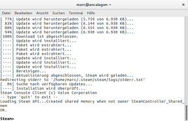

SteamCMD
Dieser Artikel wurde für die folgenden Ubuntu-Versionen getestet:
Ubuntu 16.04 Xenial Xerus
Zum Verständnis dieses Artikels sind folgende Seiten hilfreich:
SteamCMD ist eine Software, welche von Valve Software  entwickelt wird. Es handelt sich um die Kommandozeilen-Version
des Steam-Clients. Das primäre Verwendungsziel ist die Installation und Aktualisierung verschiedener dedizierter Server über die Kommandozeilen-Schnittstelle.
entwickelt wird. Es handelt sich um die Kommandozeilen-Version
des Steam-Clients. Das primäre Verwendungsziel ist die Installation und Aktualisierung verschiedener dedizierter Server über die Kommandozeilen-Schnittstelle.
Es wird empfohlen, dass man sich einen weiteren Benutzernamen bei den Verwendung von SteamCMD anlegt  .
.
|  |
| SteamCMD |
Installation¶
Paketquelle¶
Das Paket kann aus den Paketquellen installiert werden [1]:
steamcmd:i386
 mit apturl
mit apturl
Paketliste zum Kopieren:
sudo apt-get install steamcmd:i386
sudo aptitude install steamcmd:i386
Beim ersten Start werden weitere Dateien heruntergeladen [2]:
steamcmd
Manuell¶
Im ersten Schritt den Nutzer steam anlegen [2] [3] [6]:
adduser steam su - steam
Im nächsten Schritt wird ein Verzeichnis für SteamCMD angelegt [2] und in dieses gewechselt:
mkdir /home/steam/steamcmd cd /home/steam/steamcmd
Nun das SteamCMD Update Tool steamcmd_linux.tar.gz  herunterladen und im Ordner entpacken [4]. Über den Befehl 2[]
herunterladen und im Ordner entpacken [4]. Über den Befehl 2[]
./steamcmd.sh
kann das Tool verwendet werden. Bei der ersten Benutzung werden weitere Dateien und Updates heruntergeladen.
In den folgenden Erläuterungen wird SteamCMD immer durch den Befehl steamcmd im Terminal gestartet, wie es bei der Installation aus den Paketquellen standardmäßig der Fall ist. Damit das bei der manuellen Installationsmethode auch funktioniert, muss ein Alias des Befehls auf die Datei steamcmd.sh in der ~/.bashrc angelegt werden, worauf diese neu eingelesen werden muss:
echo "alias steamcmd='~/steamcmd/steamcmd.sh'" >> ~/.bashrc . ~/.bashrc
Bedienung¶
Beim Aufruf werden die gewünschten Parameter übergeben. Der folgende Befehl lädt das Windows-Spiel The Elder Scrolls III: Morrowind, welches die App-ID 22320 hat, von Steam herunter [2]:
steamcmd +Login BENUTZERNAME PASSWORT +@sSteamCmdForcePlatformType windows +app_update 22320 +quit
Parameter¶
Die folgenden Parameter stehen u.a. zur Verfügung:
| SteamCMD | |
| Parameter | Beschreibung |
help | Hilfe |
login anonymous | Login als anonymous - bei den meisten Serverdownloads möglich. |
login BENUTZER PASSWORT | Login als BENUTZER gefolgt vom PASSWORT. |
force_install_dir /home/steam/csgoserver | Installationsverzeichnis des Servers festlegen - hier: /home/steam/csgoserver |
app_update 740 | Update für den Counter-Strike Global Offensive Dedicated Server durchführen |
+@sSteamCmdForcePlatformType windows | Installation unter Linux erzwingen. |
validate | Überprüfung der Integrität. |
set_steam_guard_code | Über diesen Parameter kann der Code des Steam Guards , welchen man per Email erhalten hat, angegeben werden um den Computer zu authorizeren. |
Eine vollständige Übersicht findet man auf valvesoft.com .
Server¶
Für die Installation eines eigenen Spiele-Servers gibt es einige Schritte zu befolgen. Exemplarisch wird das Vorgehen an Left 4 Dead 2 beschrieben. Der Server sollte unter einem eigenen Benutzernamen laufen. In diesem Falle l4d1 [2] [3] für Left4Dead:
sudo adduser l4d1 cd /home/l4d1 sudo -u l4d1 -i ## Passwort muss so nicht jedes Mal eingegeben werden.
Nun die Verzeichnisse für SteamCMD und den Server anlegen [2]:
mkdir l4dserver mkdir steamcmd
Die Software kann - wie bei diesem Schritt beschrieben - von der Steam-Website heruntergeladen, installiert und aufgerufen werden [2] um den Server von Left 4 Dead 2 zu installieren:
steamcmd login anonymous force_install_dir /home/l4d1/l4dserver/ app_update 222860 validate quit
Hinweis:
Die App-ID für den gewünschten Server kann dieser Seite entnommen werden.
Starten¶
Um einen Spiel-Server zu starten, gibt man den folgenden Befehl [2] ein:
cd steam_ds/cs_go/ # wechsel in den angegebenen Ordner ./srcds_run -console -game cstrike + Karte de_dust2 + 16 maxplayers # Der Server startet Counter-Strike GO, auf der Karte "de_dust2", mit einem Limit von 16 Spielern.
Skript¶
Mittels eines Skriptes [5] kann der Ablauf automatisiert werden:
update_l4d1.txt
// update_l4d1.txt // @ShutdownOnFailedCommand 1 //set to 0 if updating multiple servers at once @NoPromptForPassword 1 login BENUTZER PASSWORT //Für Server, welche keinen Login benötigen, verwendet man: //login anonymous force_install_dir ../l4d1 app_update 222860 validate quit
Das fertige Skript kann mit dem Befehl
steamcmd +runscript update_l4d1.txt
aufgerufen werden [2].

- Erstellt mit Inyoka
-
 2004 – 2017 ubuntuusers.de • Einige Rechte vorbehalten
2004 – 2017 ubuntuusers.de • Einige Rechte vorbehalten
Lizenz • Kontakt • Datenschutz • Impressum • Serverstatus -
Serverhousing gespendet von